스프링 부트 기초
- 2021, 맥북 프로 M1 Pro 14인치 모델
- Ventura 13.1
JDK: openjdk version "11.0.17" 2022-10-18 LTS
IntelliJ: IntelliJ IDEA 2022.2.3 (Community Edition)
"스프링 입문 - 코드로 배우는 스프링 부트, 웹 MVC, DB 접근 기술"
강의에서 가지고 왔습니다. (글 작성일 현재 무료 배포 중입니다.)
인프런 김영한 님 스프링 시리즈 강의 / 로드맵
준비물
인텔리제이, JDK11
인텔리제이를 쓰는 이유? 옛날에는 이클립스가 많이 쓰였지만
인텔리제이의 편의성 및 가볍고 여러 가지 이유에서,
요즈음에는 인텔리제이 사용자가 늘어나고 있다.
유료 버전이라는 점만 빼면..
김영한 님 말씀으로는 인텔리제이가 훨씬 편리하다고 함.
인텔리제이 커뮤니티 버전이라도 사용하는 걸로!
Spring Boot 시작하기.
쉽게 시작하기.
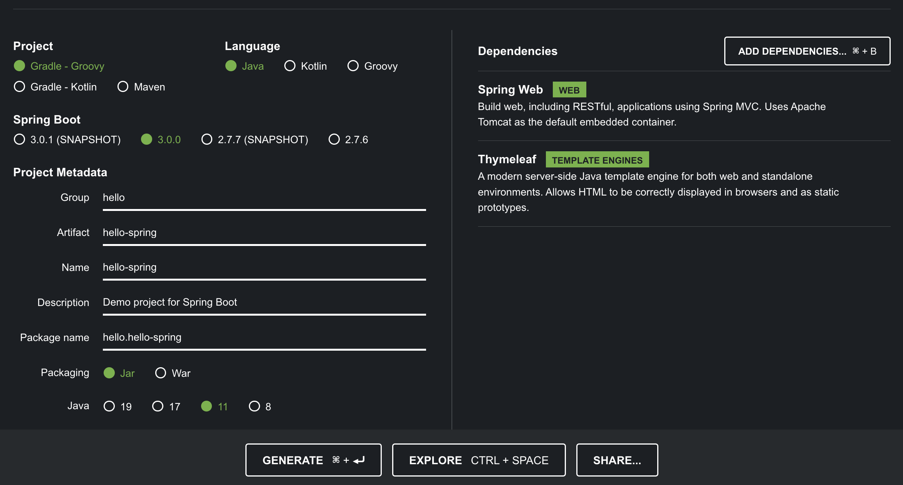
Project : 필요한 라이브러리를 당겨오고, 빌드 하는 라이프 사이클까지 다 관리를 해준다.
Gradle - Groovy 선택
과거에는 Maven 을 많이 썼지만, 요즘에는 Gradle로 넘어오고 많이 사용하는 추세다.
레거시 프로젝트의 경우 아직 Maven을 쓰는 것도 많다.
Group : 보통 그룹의 도매인을 쓰지만 연습용이므로 hello로 작성
Spring Boot
스프링 부트 버전은 강의에서는 2.3.1로 나오지만
현재는 작성일 기준 최신 버전 3.0.0으로 선택. (Snapshot이나 M2, M3등 안 붙은 것 중에 최신 버전 사용)
Java version 11 선택
ADD DEPENDENCIES 클릭 후 Spring Web, Thymeleaf 선택
마지막으로 GENERATE로 다운로드.
인텔리제이.
자신만의 폴더 생성 후 그 안에 방금 다운로드한 hello.spring.zip 파일 압축 해제한다.
인텔리제이 실행 후, Open -> 방금 설치한 폴더 안 build.gradle Open 하기.
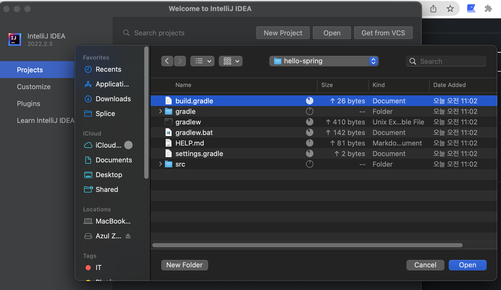
그러면 아까 Dependencies에 추가한 라이브러리들을 다운로드하기 시작한다..
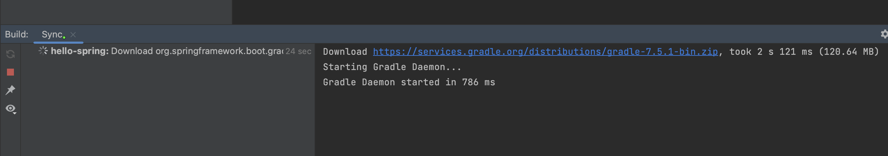
피할 수 없는 에러..
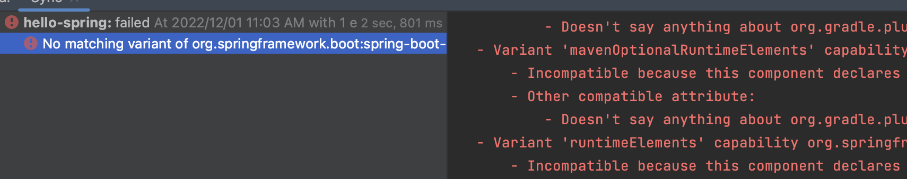
현재 글 작성일 기준 jecenter 인증서가 만료돼서 현재 문제가 있다고 한다.
그래서 버전을 바꾸기로 했다.
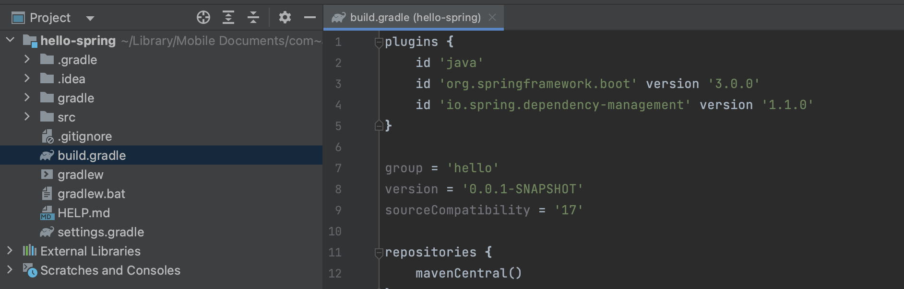
그리고 더 확인해 보니, Spring Boot 3.0 버전부터는 Java17 버전을 사용한다 한다,
11버전을 사용하기 위해 처음 과정에서 2.7.6버전으로 다시 진행하자!
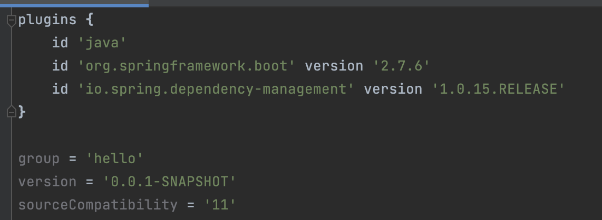
그 후 리로드 하면?
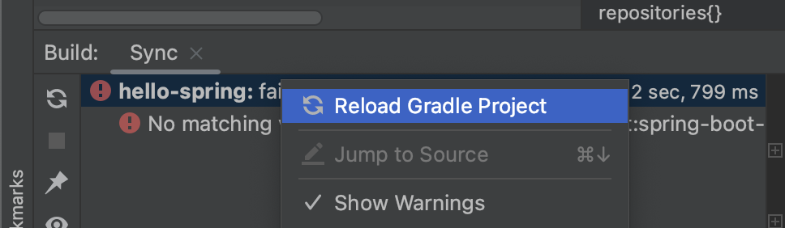
이렇게 뜨면 성공!
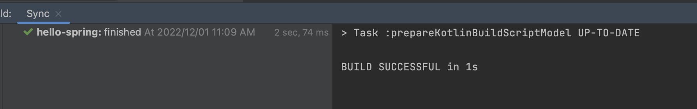
그 후, 메인 소스 파일을 열어 메인 메소드 왼쪽 초록색 화살표를 눌러 Run 해본다.
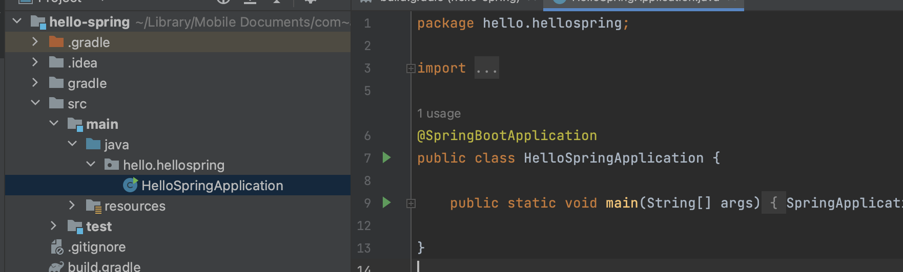
혹시 이때 자바 버전 관련 에러 나시는 분들은
settings에서 자바 컴파일러 버전 11확인
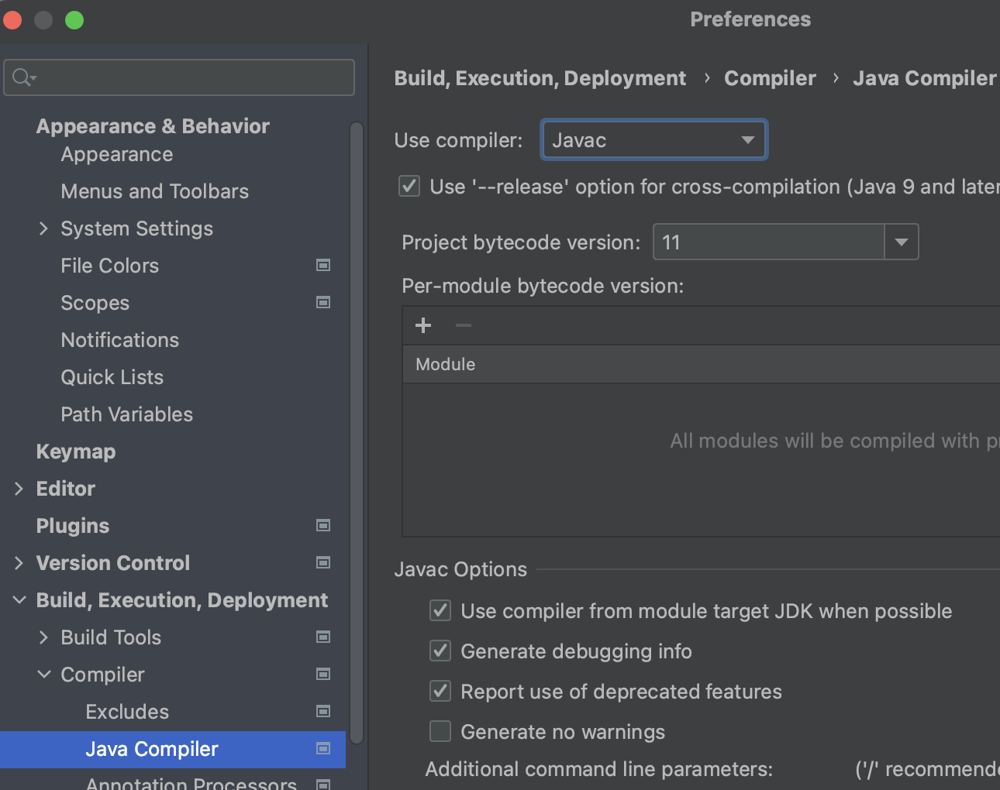
File -> Project Structure에서 SDK 버전 및, Language level 확인
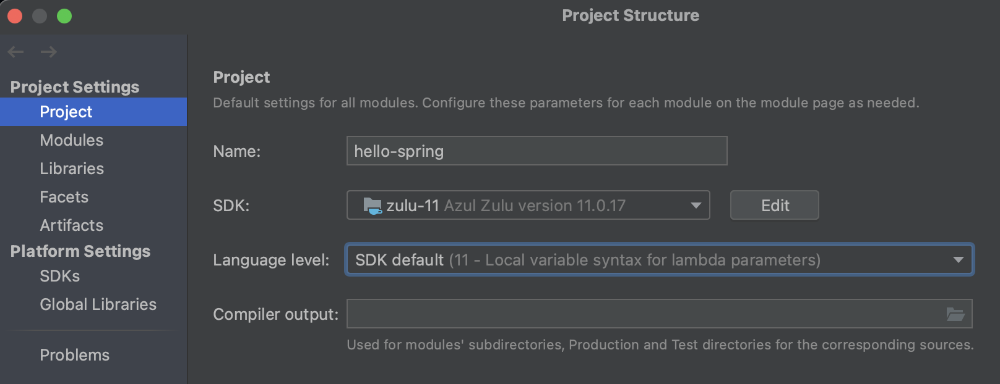
Modules에서 버전 확인!
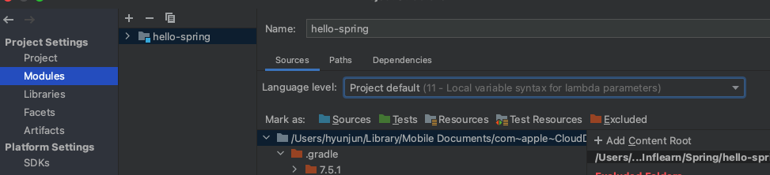
이런 에러가 나온다면
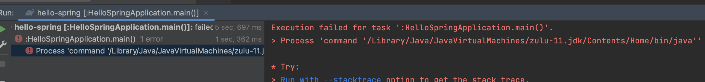
settings -> gradle에서 Build and run using, Run tests using을
기존 gradle에서 IntelliJ로 바꿔주세요 ( Gradle JVM 도 11버전인지 확인 )
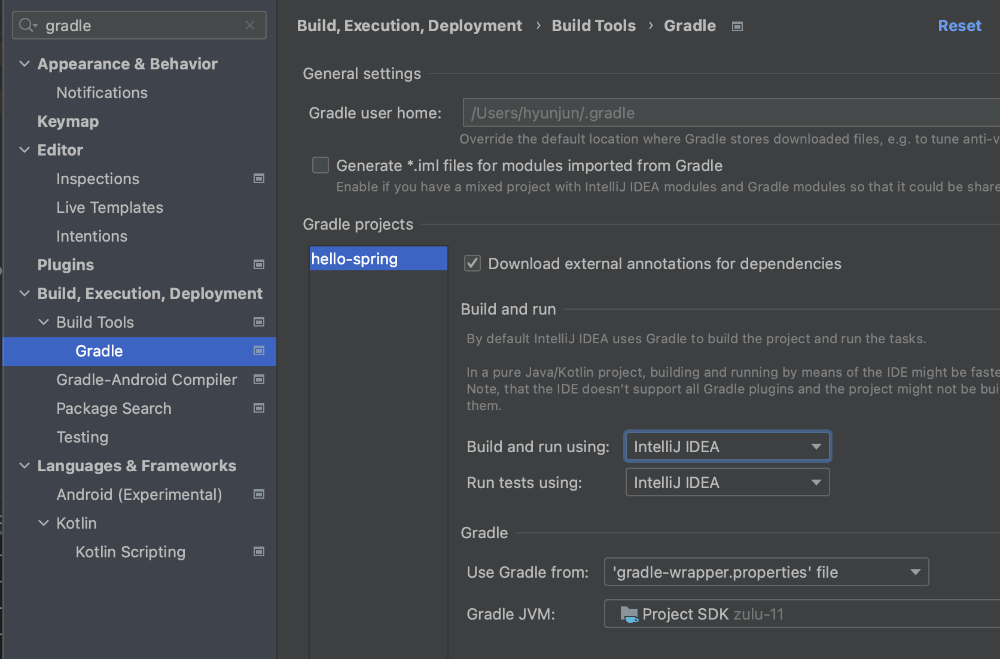
이런 귀여운 그림이 나오면 성공입니다.
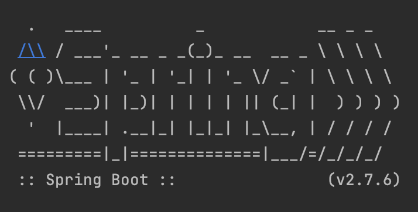
localhost:8080에 접속해서 확인해 보자.
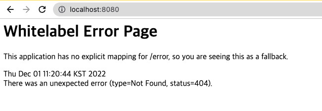
기본 에러 메시지가 아니라 스프링에서 띄워주는 에러 메시지이므로 일단은 연결은 됐으므로 성공이다.
요즈음에는 main과 test를 나누어서 작업하는 게 거의 표준화되어있다.
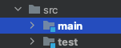
인텔리제이를 재 실행하는 경우
프로그램을 다시 시작하면 아래와 같은 에러가 뜨는데
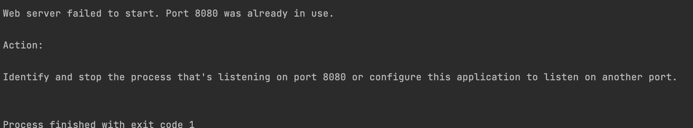
이것은 저번에 실행할 때 8080포트가 안 닫혀서 사용 중이라고 나오는 것이다.
그럴 경우엔 터미널에서 아래 명령어 사용하면 된다.
lsof -i tcp:8080 // 해당 포트 번호를 누가 사용하는지 확인
kill $(lsof -t -i:8080) // 해당 포트 내리기
이와 같이 되지 않게 하기 위해서 인텔리제이를 종료하기 전에 프로세스를 종료시키자!
(종료하지 않고 인텔리제이 끄면 포트는 계속 살아있는다.)
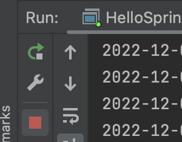
Spring Boot는 자체적으로 tomcat을 내장하고 있기 때문에 가능한 것이다!
그 외 오류 시 아래 링크 참조